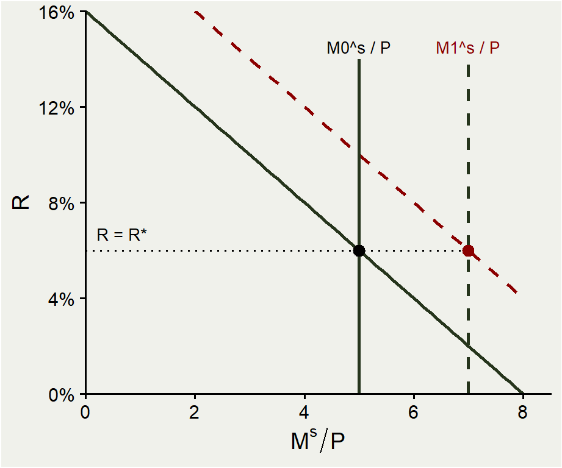
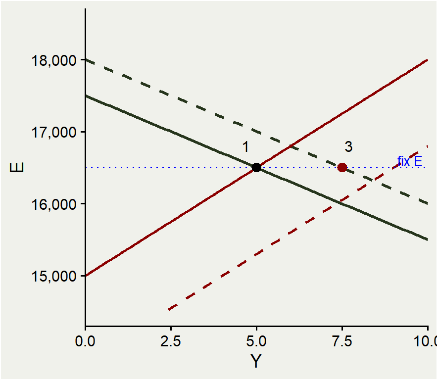
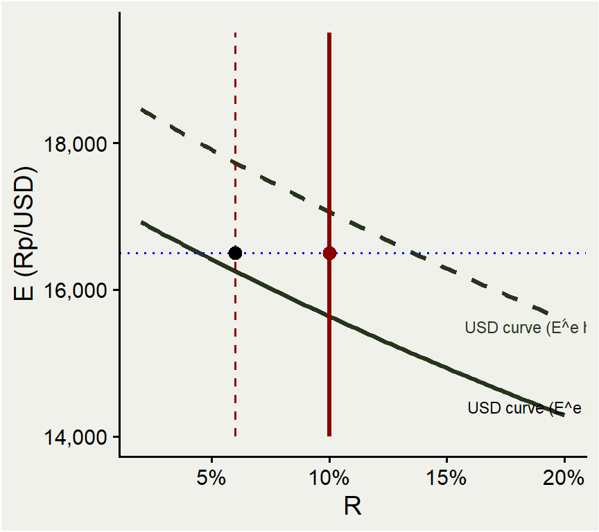
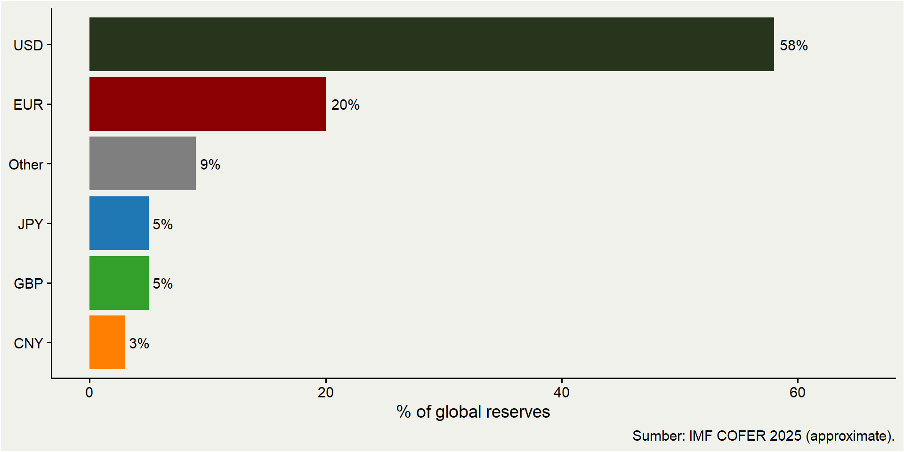

ECES905205 pertemuan 14
2026-06-08
M11-M13: semuanya asumsi floating exchange rate.
Indonesia adalah managed floating — campuran: rate ditentukan market, tapi BI intervene saat volatil.
Hari ini: apa yang terjadi kalau central bank fix exchange rate?
KOM Ch.18: mekanisme intervensi FX, sterilization, kebijakan moneter/fiskal under fixed ER, BoP crises, sistem pegging.
Highly relevant untuk Indonesia: BI triple intervention 2022-2024, kasus 1997-98, perbandingan dengan HK, Singapore, China.
Block 1: balance sheet central bank.
Block 2: bagaimana CB fix ER.
Block 3: kebijakan moneter & fiskal under fixed ER.
Block 4: devaluation effects.
Block 5: BoP crisis & capital flight.
Block 6: imperfect substitutes + sterilized intervention (BI 2022-2024 case).
Block 7: comparative pegging regimes (HK, SG, ID, China).
Block 8: global reserves & policy implications.
| Assets | Liabilities |
|---|---|
| Foreign bonds (cadev) | Currency in circulation |
| Gold | Bank reserves (giro bank di CB) |
| Domestic government bonds | Sertifikat / SBI / NCD |
| Loans to banks (lending facility) | Other liabilities |
Identitas: Assets = Liabilities + Net Worth.
Net Worth dianggap stabil → ∆Assets = ∆Liabilities.
Liabilities CB = “high-powered money” = base money.
Setiap perubahan asset akan mengubah money supply.
Sumber: SEKI BI (Statistik Ekonomi & Keuangan Indonesia).
Posisi approximate per Mar 2026 (ilustrasi):
| Pos | Nilai |
|---|---|
| Cadev (foreign reserves) | ≈ USD 145 mlr |
| SBN dimiliki BI | ≈ Rp 1.500 T |
| Total asset | ≈ Rp 4.200 T |
| Uang kartal | ≈ Rp 1.100 T |
| Giro bank umum di BI | ≈ Rp 700 T |
| SRBI/NCD/Sukuk BI | ≈ Rp 900 T |
Note SRBI (Sekuritas Rupiah BI) = instrument sterilization BI sejak 2023.
Cadev = sumber utama untuk FX intervention.
BI beli asset (foreign bond, SBN, atau pinjam ke bank).
Bayar dengan cek BI atau credit rekening bank → liabilities BI naik (giro bank di BI naik).
Bank punya excess reserves → lend → uang beredar di ekonomi naik → \(M^s\uparrow\).
Numerik: BI beli SBN Rp 10 T → giro bank di BI naik Rp 10 T → money multiplier ≈ 5 → \(M^s\) naik Rp 50 T.
Beli foreign bond efeknya sama untuk \(M^s\), plus cadev meningkat di sisi asset.
Simetris: BI jual asset → terima Rp cash → giro bank di BI turun → \(M^s\downarrow\).
Operasi sehari-hari BI (OMO): jual reverse repo SBN untuk absorb likuiditas → tighten.
Atau lelang SBI/SRBI = jual sekuritas BI → absorb base money.
Asset sale di FX market: BI jual cadev untuk Rp → cadev turun + \(M^s\) turun.
Masalah: kalau BI jual cadev untuk defend IDR, \(M^s\) otomatis turun → \(R\) naik → bisa hambat output.
Sterilization: offset dampak FX intervention pada \(M^s\).
Mekanisme: jual cadev (Rp masuk BI) + beli SBN (Rp keluar BI) → net effect pada \(M^s\) = nol.
Jadi BI bisa intervene di FX tanpa mengubah stance kebijakan moneter (rate).
Indonesia: BI rutin sterilize FX intervention via OMO domestic.
| Aksi BI | \(M^s\) | Foreign asset | Domestic asset |
|---|---|---|---|
| Nonsterilized FX purchase (beli USD) | +Rp 100 T | +Rp 100 T | 0 |
| Sterilized FX purchase | 0 | +Rp 100 T | −Rp 100 T |
| Nonsterilized FX sale (jual USD) | −Rp 100 T | −Rp 100 T | 0 |
| Sterilized FX sale | 0 | −Rp 100 T | +Rp 100 T |
Sterilized = paired with offsetting domestic asset move.
Asumsi sterilization bisa separate FX intervention dari monetary policy stance — tapi efeknya pada \(E\) tergantung imperfect substitutability (Block 6 nanti).
Untuk fix \(E = \bar E\), CB harus pastikan UIP holds di rate itu.
Karena \(E^e = \bar E\) (kalau peg credible), maka \(\Delta E/E = 0\), dan UIP collapse jadi:
\[ R = R^* \]
Implikasi: di rezim fixed ER, \(R\) domestik harus = \(R\) foreign.
BI tidak bebas memilih \(R\) — dipaksa oleh peg.
“Impossible Trinity / Trilemma**“: fixed ER + free K = no independent monetary policy.
Kalau ada tekanan apresiasi (excess demand IDR pada \(\bar E\)):
Banyak orang mau jual USD untuk Rp.
CB harus beli USD (menambah cadev) dan jual Rp → \(M^s\uparrow\) → \(R\downarrow\) → ekuilibrium kembali.
Kalau ada tekanan depresiasi (excess supply IDR):
Banyak orang mau jual Rp untuk USD.
CB harus jual USD (mengurangi cadev) dan beli Rp → \(M^s\downarrow\) → \(R\uparrow\) → ekuilibrium kembali.
Untuk maintain peg, CB harus siap adjust \(M^s\) via FX intervention.

KOM Fig 18.1: \(Y\) naik → demand uang naik.
Money demand schedule shift kanan ke \(L(R, Y_1)\).
Pada \(M^s\) awal, \(R\) akan naik.
Tapi peg memerlukan \(R = R^*\) — jadi \(R\) tidak boleh naik.
BI harus beli foreign assets (USD) → \(M^s\) naik → curva \(M^s/P\) geser ke kanan → \(R\) kembali ke \(R^*\).
Net: \(M^s\uparrow\), \(R\) tetap di \(R^*\), \(E\) tetap di \(\bar E\).
KOM Fig 18.2: BI coba ekspansi moneter (OMO beli SBN) di bawah fixed ER.
Step 1: \(M^s\uparrow\) → \(R\downarrow\) sesaat.
Step 2: \(R < R^*\) → investor pindah ke USD → demand USD naik → tekanan depresiasi IDR.
Step 3: BI harus jual cadev untuk maintain peg → \(M^s\downarrow\) → kembali ke level awal.
Net effect: \(M^s\) kembali, \(R = R^*\), \(E = \bar E\). Komposisi balance sheet berubah (lebih banyak domestic asset, lebih sedikit foreign asset), tapi tidak ada efek riil.
Monetary policy ineffective under fixed ER + free K.
“Impossible Trinity”: negara tidak bisa punya ketiga ini sekaligus:
Fixed exchange rate.
Free capital flow.
Independent monetary policy.
Harus pilih 2 dari 3.
Indonesia (1997-now): free K + independent monetary → floating ER.
Hong Kong: free K + fixed ER (peg HKD ke USD) → no independent monetary.
China (until ~2015): fixed-ish ER + independent monetary → capital controls.
Selama dekade, Indonesia tergeser dari fixed (orde Baru 1973-1997) → managed floating → free floating.

KOM Fig 18.3: \(G\) naik.
DD shift kanan → tekanan apresiasi IDR.
Untuk maintain peg, BI harus beli USD → \(M^s\uparrow\) → AA shift kanan juga.
Equilibrium baru: \(Y\) naik lebih besar dibanding floating, \(E\) tetap di \(\bar E\).
Fiscal policy lebih efektif di bawah fixed ER karena tidak ada “crowding out” via ER apresiasi.
Effectively kombinasi fiscal + monetary expansion bersamaan.
Floating ER: \(G\uparrow\) Rp 100 T → \(Y\uparrow\) ~Rp 100 T (apresiasi mengurangi net export, partial crowding out).
Fixed ER: \(G\uparrow\) Rp 100 T → \(Y\uparrow\) ~Rp 200 T (multiplier penuh, plus automatic \(M^s\uparrow\)).
Implikasi: kebijakan fiskal lebih powerful di bawah pegging.
Negara yang fix ER (HK, beberapa GCC countries) cenderung pakai fiskal sebagai stabilizer primary.
Untuk Indonesia floating: fiscal multiplier moderate (~1,3-1,5 menurut riset DEN).
KOM 22-23: dalam long-run, \(Y\) di atas potensi → wages dan prices naik.
\(P\uparrow\) → real apresiasi (karena nominal \(E\) fixed) → CA turun → DD shift kembali kiri.
\(P\uparrow\) → \(M^s/P\downarrow\) → AA shift kembali kiri.
Long-run: \(Y\) kembali ke potensi, \(P\) permanently lebih tinggi, \(E\) tetap di \(\bar E\), \(q\) permanently lebih rendah (real apresiasi).
Outcome: \(G\uparrow\) permanently → tidak ada output gain long-run, tapi inflasi permanen lebih tinggi.
Depreciation/appreciation: market-driven changes in floating ER.
Devaluation/revaluation: intentional changes in pegged rate oleh central bank.
Devaluation: \(\bar E\) dinaikkan (1 USD = lebih banyak Rp) → IDR sengaja dibuat lemah.
Revaluation: \(\bar E\) diturunkan → IDR sengaja dibuat kuat.
Indonesia historis: devaluasi besar pada 1971 (kenaikan oil price era), 1978, 1983, 1986 (sebelum era floating).
KOM Fig 18.4: CB naikkan \(\bar E\).
Untuk maintain peg baru, CB harus beli foreign asset (cadev naik).
Pembelian foreign asset → \(M^s\uparrow\) → \(R\downarrow\) + real depresiasi.
DD shift kanan (real depresiasi → CA naik), AA shift kanan (\(M^s\uparrow\)).
Output naik, cadev naik. Sering disebut “competitive devaluation” untuk boost ekspor.
Risk: kalau ekspektasi terbentuk bahwa devaluasi akan lagi terjadi, kredibilitas peg jatuh.
Competitiveness: real apresiasi dari inflasi domestik menggerus ekspor → devaluasi restore.
Output gap: kalau ekonomi underperform, devaluasi sebagai stimulus.
BoP pressure: cadev menipis, devaluasi mengurangi tekanan jual cadev.
Coordinated devaluation: jika peer countries devalue, follow untuk maintain competitiveness.
Historical examples: 1949 sterling, 1971 Smithsonian, 1992 ERM, 1994 Mexico, 1997 Indonesia (forced floating), 2015 China mini-devaluation.
BoP crisis: CB tidak punya cukup cadev untuk maintain peg.
Mekanisme: pasar antisipasi devaluasi → switch dari Rp ke USD sekarang → menekan cadev → kalau cadev habis, CB harus devalue → ekspektasi pasar terkonfirmasi.
Self-fulfilling: ekspektasi devaluasi → devaluasi.
Catatan: bahkan peg yang “fundamentally sound” bisa kollaps kalau ekspektasi negatif terbentuk.

KOM Fig 18.5: capital flight.
\(E^e\) naik (pasar ekspektasi devaluasi).
USD return curve shift kanan/atas.
Untuk maintain peg \(\bar E = 16.500\):
CB harus naikkan \(R\) tajam untuk match USD curve baru.
Tapi \(R\) tinggi \(\Rightarrow\) hancur output, employment.
Alternatif: jual cadev untuk satisfy demand USD.
Either way, biaya defending peg meningkat.
Sebelum krisis: Indonesia crawling peg vs USD, IDR depresiasi ~5%/tahun (managed).
Juli 1997: Thailand devalue baht → contagion ke Indonesia.
Cadev BI Juli 1997: ~USD 20 mlr. BI lebar band peg dari ±8% ke ±12%.
Agustus 1997: BI abandon peg, IDR free floating.
IDR jatuh dari ~Rp 2.500 (Juli) ke Rp 16.500 (Jan 1998) — depresiasi ~85%.
Cadev terkikis ke ~$14 mlr saat krisis puncak.
Konsekuensi: rekapitalisasi bank, IMF program, krisis politik.
Speculative attack model (Krugman, JMCB 1979).
Setup: CB punya cadev terbatas, defending peg. Sementara itu, demand domestic credit tumbuh.
“Shadow floating rate” = rate yang akan terjadi kalau peg di-abandon sekarang.
Kalau shadow rate > peg → cadev menetes habis lewat permintaan rutin.
Pada titik \(T\) di mana shadow rate = peg, semua remaining cadev diserap dalam attack.
Implication: kollaps peg bukan random — predictable dari fundamentals.
Reserves saja tidak cukup: butuh juga policy credibility.
Indonesia 1997: reserves cukup untuk 4-5 bulan impor, tapi political shock + balance sheet currency mismatch hancurkan kepercayaan.
Bank-bank Indonesia banyak hutang USD vs aset Rp → ER risk tinggi.
Setelah 1997, banyak negara (termasuk Indonesia) shift ke floating + accumulate reserves just in case.
2002+ Indonesia: BI Law 1999 (independence), inflation targeting (2005), managed floating, capital account terbuka.
Sejauh ini asumsi: deposit Rp dan USD = perfect substitutes (UIP exact).
Realitas: berbagai risiko buat mereka bukan substitutes:
Default risk (sovereign default).
ER risk (kalau peg goyah).
Liquidity risk (sulit jual dalam krisis).
Risk premium \(\rho\):
\[ R = R^* + \frac{E^e - E}{E} + \rho \]
Kontextual:
2022-2024: Fed hiking 425 bps, IDR tekanan depresiasi.
BI tidak ingin IDR rusak terlalu cepat → intervene.
Tiga tools (BI menyebut “triple intervention”):
Spot intervention: jual USD onshore.
DNDF (Domestic Non-Deliverable Forward): forward sales yang settle dalam Rp.
SBN purchase: beli SBN dari pasar saat foreign investor jual.
Mengapa tiga, bukan satu?
Spot: langsung kurangi tekanan \(E\) tapi membakar cadev.
DNDF: signal commitment tanpa fisik USD (settle in Rp). Hemat cadev.
SBN purchase: absorb supply SBN saat foreign sell-off, prevent yield blowout.
Coordinated: spot di FX, DNDF di forward, SBN purchase di bond market.
DNDF outstanding peak ~USD 5 mlr (Oct 2022).
DNDF = forward kontrak USD/IDR yang settle dalam Rp (not deliverable).
Mekanisme: bank beli DNDF dari BI → mereka punya hedge USD tanpa harus fisik pegang USD.
Mengurangi tekanan beli USD di spot market.
BI tidak burn cadev — hanya commitment untuk pay perbedaan kurs di settlement.
Innovative tool unique to BI (juga India, sebagian Brazil).
Kelebihan: cadev intact + market dapat hedging.
Di bawah perfect substitutes: sterilized intervention tidak punya efek pada \(E\).
Di bawah imperfect substitutes: sterilized intervention bisa bergerak \(E\) via \(\rho\).
Mekanisme: BI jual cadev (foreign asset turun) + beli SBN (domestic asset naik) → komposisi asset berubah → relative supply USD/Rp asset berubah → \(\rho\) shift.
KOM Fig 18.7: USD return curve shift lebih ke bawah via lower \(\rho\) → \(E\) apresiasi.
Empiris: BI’s sterilized intervention 2022-2024 diperkirakan mengurangi depresiasi IDR ~3-5pp.
Reserve currency system: satu mata uang menjadi international means of payment.
Bretton Woods 1944-1973: USD = reserve currency. Negara fix vs USD, USD fix vs gold @ $35/oz.
Setelah 1971 Nixon shock: USD floating, sistem berubah.
Sekarang: USD masih dominant reserve currency tapi tanpa formal commitment.
2025 reserves: ~58% USD, ~20% EUR, ~5% JPY, ~5% GBP, ~3% RMB (IMF COFER).
HKD dipegg ke USD pada 7,75-7,85 sejak 1983.
Currency board = mekanisme hard peg:
Setiap HKD issued harus 100%+ backed by USD assets di HKMA.
Tidak ada discretionary monetary policy.
\(R_{\text{HKD}}\) pegged ke \(R_{\text{USD}}\) otomatis lewat arbitrase.
Pilihan trilemma HK: fixed ER + free K → no independent monetary.
Pros: kredibilitas tinggi (survived 1997 Asian crisis without break).
Cons: tidak ada policy tool kalau ada local recession (HK boom-bust property cycles).
Singapore MAS pakai basket-band-crawl (BBC) framework.
Target NEER (trade-weighted SGD basket) bergerak dalam sloping band.
Policy lever:
Slope (rate of basket appreciation/depreciation).
Width (band tolerance).
Center (re-centering occasionally).
MAS adjust dua kali setahun (April, Oct), formal policy review.
Pilihan trilemba SG: stable ER (managed) + free K → independent monetary limited.
Diiklankan sebagai “exchange rate-based monetary policy” — beda dari interest rate-targeting.
BI: \(E\) ditentukan market, intervene “as needed” untuk smoothing dan mencegah disorderly movements.
Free K dengan supervisory mekanisme.
Independent monetary via BI 7DRR (inflation targeting framework sejak 2005).
Trilemma: floating + free K + monetary independence.
BI tidak punya formal target \(E\) tapi punya implicit “comfort zone” — biasanya tidak ingin IDR depresiasi >5% setahun atau >2% dalam sebulan.
| Periode | Regime |
|---|---|
| 1994-2005 | Fixed @ 8,28 RMB/USD (de facto peg) |
| 2005-2008 | Crawling peg, RMB apresiasi ~6%/tahun |
| 2008-2010 | Re-peg @ 6,83 (crisis) |
| 2010-2015 | Crawling peg dengan band ±2% |
| Aug 2015 | “Mini-devaluation” — band reform, RMB drop 3% |
| 2015-now | “Managed float” — PBoC daily fixing dengan basket reference |
Reserves: $200 mlr (2001) → peak $4 T (2014) → $3,2 T (2025).
Pilihan trilemba China: managed ER + capital controls + independent monetary.
2016: IMF SDR basket include RMB.
2024 share global reserves: ~3% (vs goal ~10% by 2030).
Constraints:
Capital controls limit RMB convertibility.
Belt & Road push for RMB invoicing in trade.
Geopolitical: sanctions Russia 2022 mempercepat de-dollarization.
Untuk Indonesia: trade dengan China mostly USD invoiced. RMB sebagai reserves kecil tapi growing.

Post-1997 lesson: cadev sebagai self-insurance terhadap sudden stops.
“Greenspan-Guidotti rule”: cadev ≥ short-term external debt.
IMF Adequacy metric (ARA): kombinasi short-term debt, money supply, exports, broad money.
Indonesia 2025: cadev ~145 mlr, sufficient untuk ~6 bulan impor + repayment short-term debt.
Cost: opportunity cost cadev di USD bonds yield rendah vs domestic investment yield tinggi.
Approximate breakdown (illustrative):
~80% USD-denominated (US Treasuries, agencies).
~10% EUR-denominated.
~5% gold (BI hold ~80 ton gold).
~5% other (CNY, JPY, GBP, SDRs).
Managed by BI Reserve Management Department.
Trade-off: safety (Treasuries) vs return (riskier sovereign bonds, equities).
BI conservative — focus on liquidity dan capital preservation.
Opportunity cost = \(r_{\text{domestic}} - r_{\text{USD}}\) × reserves.
Untuk Indonesia: real rate ~3,25%, USD real rate ~2,2% → cost ~1,05% × $145 mlr ≈ $1,5 mlr/tahun.
Atau dalam Rp: ~Rp 24 triliun/tahun “kost” untuk holding reserves.
Justifikasi: insurance value > carry cost (terutama lessons dari 1997).
Akademik debate: optimal level of reserves? IMF ARA suggests Indonesia level adequate, not excessive.
CB balance sheet → setiap perubahan asset/liability mengubah \(M^s\).
Sterilization: separate FX intervention dari monetary stance.
Trilemma: pilih 2 dari (fixed ER, free K, independent monetary).
Fixed ER: monetary policy ineffective, fiscal lebih kuat.
BoP crisis: self-fulfilling kalau ekspektasi devaluasi terbentuk.
Imperfect substitutability memungkinkan sterilized intervention bekerja via risk premium.
Comparative regimes: HK (currency board), SG (BBC), ID (managed floating), China (managed peg + K controls).
BI jual USD 1 mlr di spot market dan simultan beli SBN Rp 16 T (asumsi \(E = 16.400\)).
Trace efek pada:
Solusi:
Cadev: turun USD 1 mlr (~Rp 16,4 T).
\(M^s\): net effect = 0 (sterilization sempurna).
\(R\): tidak berubah (asset substitute sempurna asumsi default).
\(E\): di bawah imperfect substitutes, \(E\) apresiasi via \(\rho\) shift.
BI defending peg \(\bar E = 14.000\). Cadev USD 20 mlr. Domestic credit growth Rp 50 T/bulan netto menambah \(M^s\).
Shadow floating rate naik ~Rp 200/bulan.
Estimasi: kapan attack akan terjadi (kapan shadow rate = peg)?
Solusi sederhana:
Anggap peg holds saat shadow = peg.
Misal shadow rate saat ini = Rp 12.000, naik Rp 200/bulan.
\(T \approx (14.000 - 12.000) / 200 = 10\) bulan.
Tapi attack akan terjadi sebelum \(T\): pasar antisipasi → speculative attack di \(T-\epsilon\).
Indonesia 1997: shadow rate naik karena domestic credit growth + capital flight; attack Aug 1997.
Untuk masing-masing event berikut, mana yang lebih efektif: monetary policy atau fiscal policy?
Indonesia floating: recession, perlu output boost.
Hong Kong currency board: recession.
Singapore BBC, ekspor melemah.
Solusi:
M11: FX market mechanics + UIP/CIP + carry trade.
M12: money market formal + PPP + monetary approach + real ER.
M13: AA-DD model + monetary/fiscal short-run & long-run.
M14: fixed ER + intervention + BoP crisis + comparative regimes.
Full picture: international macroeconomics dari harga uang (ER), stok uang (\(M^s, M^d\)), output (\(Y\)), dan kebijakan (BI, fiscal authority).
UAS: ekspektasi mahasiswa bisa mengaplikasi framework ini ke kasus Indonesia recent (2022-2025 episode).
Terima kasih untuk semester ini!